import matplotlib.pyplot as plt
import numpy as np
x = np.arange(1, 7)
y = np.full(6, 1/6)
plt.stem(x, y)
plt.xlabel("Outcome (x)")
plt.ylabel("Probability P(X=x)")
plt.title("PMF of a Fair Six-Sided Die")
plt.xticks(x)
plt.show()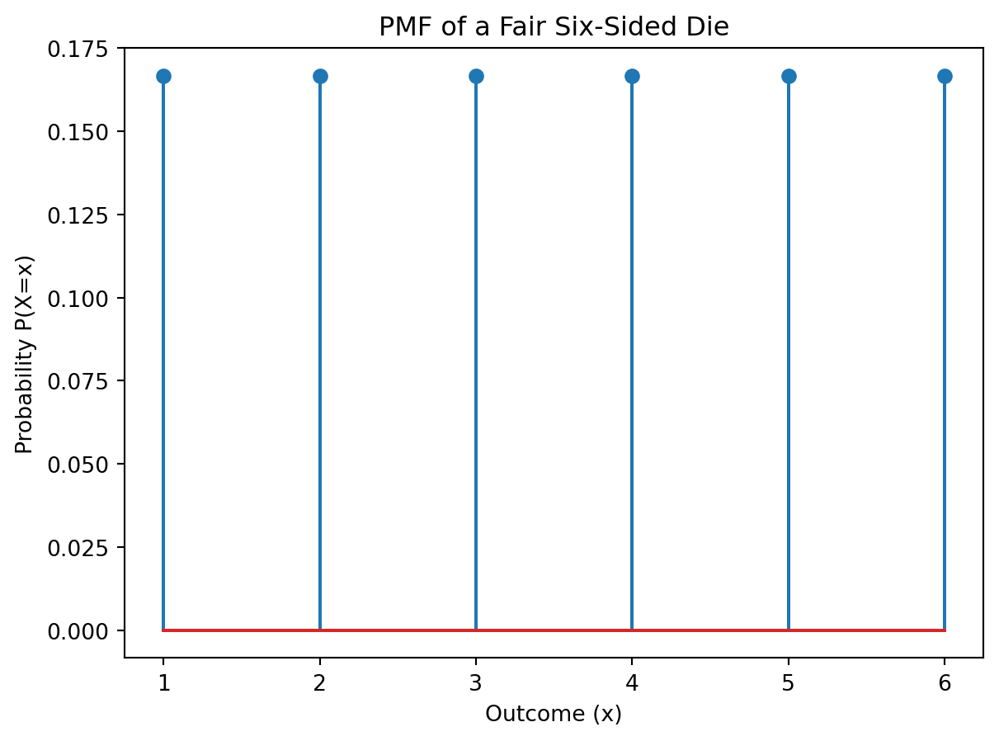
Discrete probability deals with events that have a finite or countably infinite number of possible outcomes. Unlike continuous probability, where outcomes can take on any value within a range (e.g., height, weight), discrete probability focuses on distinct, separate outcomes. For example, the number of heads when flipping a coin three times (0, 1, 2, or 3) is a discrete random variable. Other examples include the number of cars passing a certain point on a highway in an hour, or the number of defects in a batch of manufactured items. The key characteristic is that we can count the possible outcomes.
A Probability Mass Function (PMF) is a function that gives the probability that a discrete random variable is exactly equal to some value. We denote the PMF of a discrete random variable \(X\) as \(P(X=x)\), where \(x\) represents a specific value the random variable can take. The PMF must satisfy two conditions:
Let’s consider an example: rolling a fair six-sided die. The random variable \(X\) represents the outcome of the roll. The PMF is:
\(P(X=x) = \begin{cases} \frac{1}{6} & x \in \{1, 2, 3, 4, 5, 6\} \\ 0 & \text{otherwise} \end{cases}\)
import matplotlib.pyplot as plt
import numpy as np
x = np.arange(1, 7)
y = np.full(6, 1/6)
plt.stem(x, y)
plt.xlabel("Outcome (x)")
plt.ylabel("Probability P(X=x)")
plt.title("PMF of a Fair Six-Sided Die")
plt.xticks(x)
plt.show()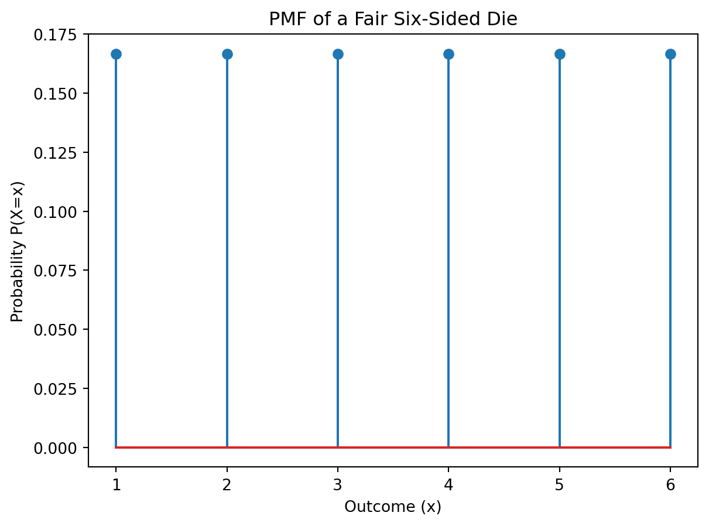
The Cumulative Distribution Function (CDF) of a discrete random variable \(X\), denoted as \(F(x)\), gives the probability that \(X\) is less than or equal to a specific value \(x\). Formally:
\(F(x) = P(X \le x) = \sum_{i \le x} P(X=i)\)
For our six-sided die example, the CDF is:
\(F(x) = \begin{cases} 0 & x < 1 \\ \frac{1}{6} & 1 \le x < 2 \\ \frac{2}{6} & 2 \le x < 3 \\ \frac{3}{6} & 3 \le x < 4 \\ \frac{4}{6} & 4 \le x < 5 \\ \frac{5}{6} & 5 \le x < 6 \\ 1 & x \ge 6 \end{cases}\)
x = np.arange(1, 7)
y = np.cumsum(np.full(6, 1/6))
plt.step(x, y)
plt.xlabel("Outcome (x)")
plt.ylabel("Cumulative Probability F(x)")
plt.title("CDF of a Fair Six-Sided Die")
plt.xticks(x)
plt.show()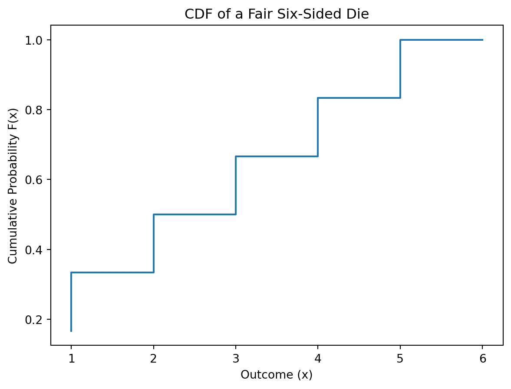
The expectation (or expected value) of a discrete random variable \(X\), denoted as \(E[X]\) or \(\mu\), is the average value of \(X\) weighted by its probabilities:
\(E[X] = \mu = \sum_{x} x \cdot P(X=x)\)
For the six-sided die:
\(E[X] = 1(\frac{1}{6}) + 2(\frac{1}{6}) + 3(\frac{1}{6}) + 4(\frac{1}{6}) + 5(\frac{1}{6}) + 6(\frac{1}{6}) = 3.5\)
The variance, denoted as \(Var(X)\) or \(\sigma^2\), measures the spread or dispersion of the random variable around its mean:
\(Var(X) = E[(X - \mu)^2] = \sum_{x} (x - \mu)^2 \cdot P(X=x)\)
Alternatively, it can be calculated as:
\(Var(X) = E[X^2] - (E[X])^2\)
where \(E[X^2] = \sum_{x} x^2 \cdot P(X=x)\)
For the six-sided die:
\(E[X^2] = 1^2(\frac{1}{6}) + 2^2(\frac{1}{6}) + 3^2(\frac{1}{6}) + 4^2(\frac{1}{6}) + 5^2(\frac{1}{6}) + 6^2(\frac{1}{6}) = \frac{91}{6}\)
\(Var(X) = \frac{91}{6} - (3.5)^2 = \frac{35}{12} \approx 2.92\)
mu = np.mean(x)
variance = np.var(x)
print(f"Expectation (mu): {mu}")
print(f"Variance: {variance}")Expectation (mu): 3.5
Variance: 2.9166666666666665A binomial experiment is a statistical experiment that satisfies the following conditions:
Examples include flipping a coin n times, testing n light bulbs for defects, or surveying n people about their preference for a product.
The probability mass function (PMF) of a binomial random variable \(X\), representing the number of successes in \(n\) trials, is given by:
\(P(X=k) = \binom{n}{k} p^k (1-p)^{n-k}\) for \(k = 0, 1, 2, ..., n\)
where \(\binom{n}{k} = \frac{n!}{k!(n-k)!}\) is the binomial coefficient, representing the number of ways to choose \(k\) successes from \(n\) trials.
The cumulative distribution function (CDF) is:
\(F(k) = P(X \le k) = \sum_{i=0}^{k} \binom{n}{i} p^i (1-p)^{n-i}\)
Python’s scipy.stats module provides functions for working with the binomial distribution.
import numpy as np
import matplotlib.pyplot as plt
from scipy.stats import binom
# Parameters
n = 10 # Number of trials
p = 0.3 # Probability of success
# PMF
k = np.arange(0, n + 1)
pmf = binom.pmf(k, n, p)
#CDF
cdf = binom.cdf(k,n,p)
plt.figure(figsize=(12, 5))
plt.subplot(1, 2, 1)
plt.stem(k, pmf)
plt.title('Binomial PMF (n=10, p=0.3)')
plt.xlabel('Number of Successes (k)')
plt.ylabel('Probability P(X=k)')
plt.subplot(1, 2, 2)
plt.step(k, cdf)
plt.title('Binomial CDF (n=10, p=0.3)')
plt.xlabel('Number of Successes (k)')
plt.ylabel('Cumulative Probability P(X≤k)')
plt.tight_layout()
plt.show()
#Example calculation: Probability of exactly 3 successes
probability_3_successes = binom.pmf(3, n, p)
print(f"Probability of exactly 3 successes: {probability_3_successes}")
#Example calculation: Probability of at most 3 successes
probability_at_most_3_successes = binom.cdf(3, n, p)
print(f"Probability of at most 3 successes: {probability_at_most_3_successes}")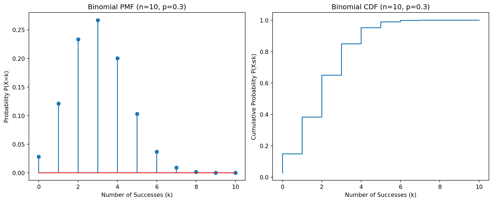
Probability of exactly 3 successes: 0.26682793199999977
Probability of at most 3 successes: 0.6496107184000002The expectation (mean) and variance of a binomial distribution are:
\(E[X] = np\) \(Var(X) = np(1-p)\)
For our example (n=10, p=0.3):
\(E[X] = 10 \times 0.3 = 3\) \(Var(X) = 10 \times 0.3 \times (1 - 0.3) = 2.1\)
mean = n * p
variance = n * p * (1 - p)
print(f"Expectation: {mean}")
print(f"Variance: {variance}")Expectation: 3.0
Variance: 2.0999999999999996A/B testing is a common application of the binomial distribution. Suppose we have two versions of a website (A and B) and we want to see which one has a higher conversion rate (e.g., users clicking a “buy” button). We randomly assign users to either version A or version B and track the number of conversions in each group. We can use the binomial distribution to model the number of conversions in each group and perform hypothesis testing to determine if there’s a statistically significant difference between the conversion rates.
In a Bayesian approach to the binomial distribution, we treat the probability of success, \(p\), as a random variable itself, rather than a fixed constant. We start with a prior distribution for \(p\) (reflecting our initial beliefs about the likely value of \(p\)) and update this prior based on observed data using Bayes’ theorem. A common prior for \(p\) is the Beta distribution, which is conjugate to the binomial distribution (meaning the posterior distribution is also a Beta distribution).
Let’s say we observe \(k\) successes in \(n\) trials. If the prior for \(p\) is a Beta distribution with parameters \(\alpha\) and \(\beta\), denoted as \(Beta(\alpha, \beta)\), then the posterior distribution for \(p\) is:
\(P(p | k, n) \sim Beta(\alpha + k, \beta + n - k)\)
from scipy.stats import beta
import matplotlib.pyplot as plt
#Prior distribution parameters
alpha_prior = 1
beta_prior = 1
# Observed data
k = 6 #Number of successes
n = 10 #Number of trials
# Posterior distribution parameters
alpha_posterior = alpha_prior + k
beta_posterior = beta_prior + n - k
#Plot prior and posterior distributions
x = np.linspace(0, 1, 100)
prior = beta.pdf(x, alpha_prior, beta_prior)
posterior = beta.pdf(x, alpha_posterior, beta_posterior)
plt.plot(x, prior, label='Prior Distribution')
plt.plot(x, posterior, label='Posterior Distribution')
plt.xlabel('Probability of Success (p)')
plt.ylabel('Density')
plt.title('Prior and Posterior Distributions for p')
plt.legend()
plt.show()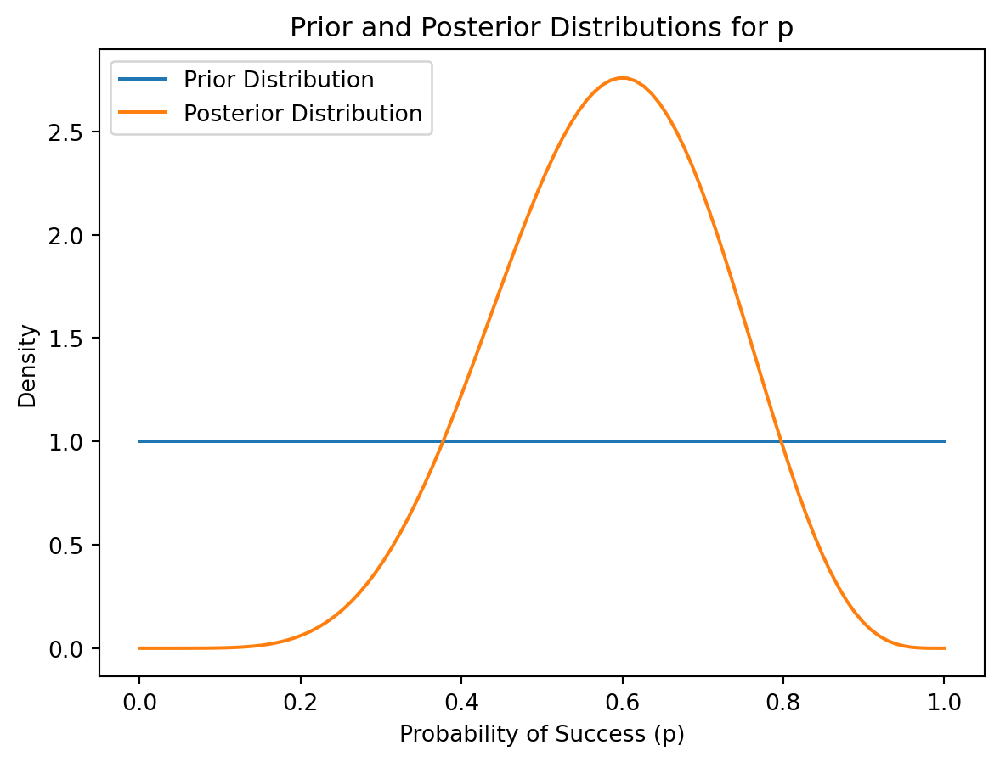
This posterior distribution summarizes our updated belief about the true probability of success after observing the data. We can calculate credible intervals from this posterior distribution to quantify the uncertainty about p.
A Poisson process models the probability of a given number of events occurring in a fixed interval of time or space if these events occur with a known average rate and independently of the time since the last event. The key characteristics of a Poisson process are:
Examples include:
The probability mass function (PMF) of a Poisson random variable X, representing the number of events in a given interval, is:
\(P(X=k) = \frac{e^{-\lambda}\lambda^k}{k!}\) for \(k = 0, 1, 2, ...\)
where:
The cumulative distribution function (CDF) is:
\(F(k) = P(X \le k) = \sum_{i=0}^{k} \frac{e^{-\lambda}\lambda^i}{i!}\)
import numpy as np
import matplotlib.pyplot as plt
from scipy.stats import poisson
# Parameter
lam = 5 # Average rate of events
# PMF
k = np.arange(0, 15) # Range of events
pmf = poisson.pmf(k, lam)
# CDF
cdf = poisson.cdf(k, lam)
plt.figure(figsize=(12, 5))
plt.subplot(1, 2, 1)
plt.stem(k, pmf)
plt.title('Poisson PMF (λ=5)')
plt.xlabel('Number of Events (k)')
plt.ylabel('Probability P(X=k)')
plt.subplot(1, 2, 2)
plt.step(k, cdf)
plt.title('Poisson CDF (λ=5)')
plt.xlabel('Number of Events (k)')
plt.ylabel('Cumulative Probability P(X≤k)')
plt.tight_layout()
plt.show()
# Example calculation: Probability of exactly 3 events
probability_3_events = poisson.pmf(3, lam)
print(f"Probability of exactly 3 events: {probability_3_events}")
# Example calculation: Probability of at most 3 events
probability_at_most_3_events = poisson.cdf(3, lam)
print(f"Probability of at most 3 events: {probability_at_most_3_events}")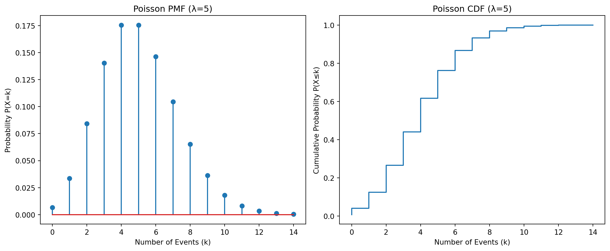
Probability of exactly 3 events: 0.1403738958142805
Probability of at most 3 events: 0.2650259152973616The expectation (mean) and variance of a Poisson distribution are both equal to λ:
\(E[X] = λ\) \(Var(X) = λ\)
mean = lam
variance = lam
print(f"Expectation: {mean}")
print(f"Variance: {variance}")Expectation: 5
Variance: 5The number of visitors to a website in a given hour can often be modeled using a Poisson distribution. If the average hourly rate of visitors is known, we can use the Poisson distribution to calculate the probability of a certain number of visitors in that hour. This can be useful for planning server capacity or predicting website load.
In a Bayesian approach to the Poisson distribution, we treat the rate parameter λ as a random variable. A common prior for λ is the Gamma distribution, which is conjugate to the Poisson distribution.
If the prior for λ is a Gamma distribution with shape parameter α and rate parameter β, denoted as \(Gamma(α, β)\), and we observe k events, then the posterior distribution for λ is:
\(P(λ | k) \sim Gamma(α + k, β + 1)\)
from scipy.stats import gamma
import matplotlib.pyplot as plt
import numpy as np
# Prior parameters
alpha_prior = 2
beta_prior = 1
#Observed data
k = 8 #Number of events
# Posterior parameters
alpha_posterior = alpha_prior + k
beta_posterior = beta_prior + 1
#Plot prior and posterior distributions
x = np.linspace(0, 20, 100) # Adjust range as needed
prior = gamma.pdf(x, alpha_prior, scale=1/beta_prior)
posterior = gamma.pdf(x, alpha_posterior, scale=1/beta_posterior)
plt.plot(x, prior, label='Prior Distribution')
plt.plot(x, posterior, label='Posterior Distribution')
plt.xlabel('Rate Parameter (λ)')
plt.ylabel('Density')
plt.title('Prior and Posterior Distributions for λ')
plt.legend()
plt.show()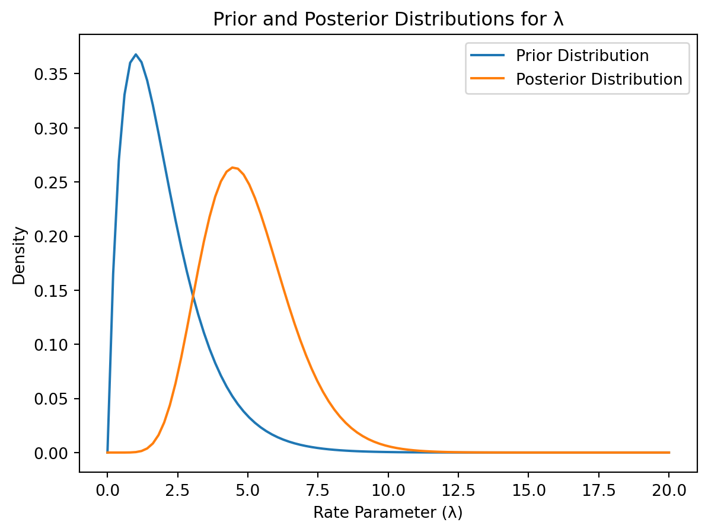
The posterior distribution represents our updated belief about the true rate parameter λ after observing the data. We can use this posterior to make inferences about future events or to quantify uncertainty about λ.
Categorical data represents observations that can be assigned to categories or groups. These categories are often qualitative (e.g., colors, types of fruit) rather than quantitative (numerical). Categorical data can be nominal (unordered, like colors) or ordinal (ordered, like education levels: high school, bachelor’s, master’s). We often represent categorical data using frequency counts or proportions for each category.
The probability mass function (PMF) for categorical data assigns a probability to each category. Let \(C_1, C_2, ..., C_k\) be the categories, and let \(P(C_i)\) be the probability of observing category \(C_i\). The PMF satisfies:
For example, if we have categories “Red,” “Green,” and “Blue,” the PMF might be:
\(P(\text{Red}) = 0.4\) \(P(\text{Green}) = 0.3\) \(P(\text{Blue}) = 0.3\)
The multinomial distribution is a generalization of the binomial distribution to more than two categories. It models the probabilities of observing counts for each category in a fixed number of independent trials, where each trial has the same set of possible outcomes (categories) with constant probabilities.
Let \(X_i\) be the count of observations in category \(C_i\), and let \(n\) be the total number of trials. The probability mass function of the multinomial distribution is:
\(P(X_1 = x_1, X_2 = x_2, ..., X_k = x_k) = \frac{n!}{x_1!x_2!...x_k!} \prod_{i=1}^{k} p_i^{x_i}\)
where:
import numpy as np
from scipy.stats import multinomial
#Probabilities for each category
p = np.array([0.4, 0.3, 0.3]) #Red, Green, Blue
# Number of trials
n = 10
# Example: probability of observing 4 Red, 3 Green, 3 Blue
x = np.array([4, 3, 3])
probability = multinomial.pmf(x, n, p)
print(f"Probability: {probability}")
#Visualizing the distribution (challenging for >2 categories) - A bar chart showing the probabilities.
categories = ['Red', 'Green', 'Blue']
plt.bar(categories, p)
plt.ylabel('Probability')
plt.title('Probability Mass Function for Colors')
plt.show()Probability: 0.07838208000000017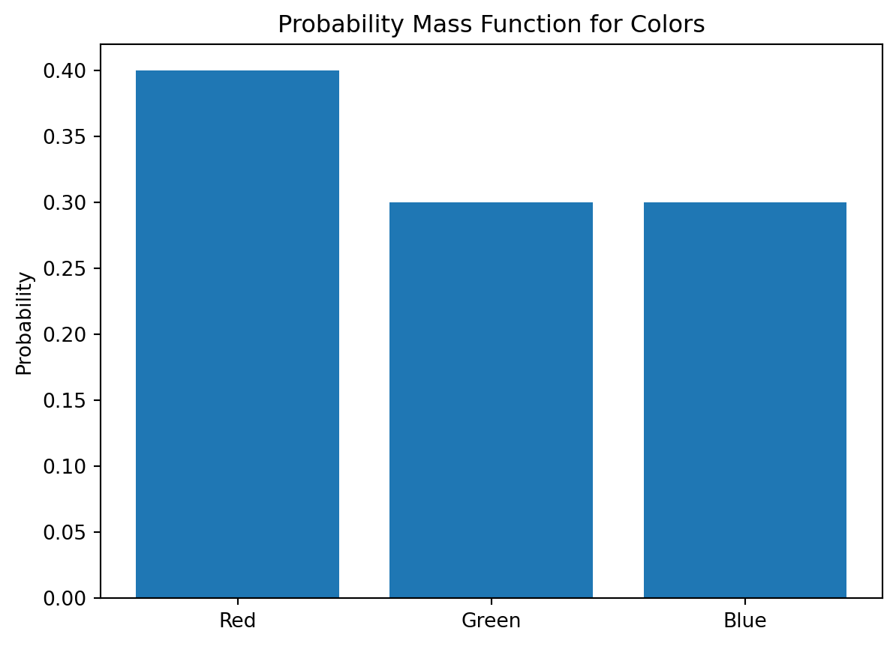
Imagine a survey asking respondents to choose their favorite ice cream flavor from chocolate, vanilla, and strawberry. The survey results can be analyzed using the multinomial distribution to determine the probability of observing specific combinations of flavor choices.
The Bayesian approach to categorical data involves placing prior distributions on the category probabilities (\(p_i\)). A common choice is the Dirichlet distribution, which is the conjugate prior to the multinomial distribution. The Dirichlet distribution is parameterized by a vector of concentration parameters, \(\alpha = (\alpha_1, \alpha_2, ..., \alpha_k)\), where \(\alpha_i > 0\) for all i.
If the prior is \(Dir(\alpha)\), and we observe counts \(x = (x_1, x_2, ..., x_k)\), then the posterior distribution is:
\(P(p | x) \sim Dir(\alpha + x)\)
from scipy.stats import dirichlet
import matplotlib.pyplot as plt
import numpy as np
# Prior parameters (symmetric Dirichlet, implies prior belief of equal probabilities)
alpha_prior = np.array([1, 1, 1]) # For Red, Green, Blue
#Observed data
x = np.array([4,3,3]) #Counts of Red, Green, Blue
# Posterior parameters
alpha_posterior = alpha_prior + x
#Plotting the posterior - this requires more complex visualization for >2 categories
#This example demonstrates 2D projection for simplicity. More complex visualization methods are needed for higher dimensions.
#We can only effectively visualize the first two categories.
samples = dirichlet.rvs(alpha_posterior, size=10000) #Generating samples to visualize the 2D distribution
plt.scatter(samples[:, 0], samples[:,1], alpha=0.2)
plt.xlabel('Probability of Red')
plt.ylabel('Probability of Green')
plt.title('Posterior Distribution of Probabilities')
plt.show()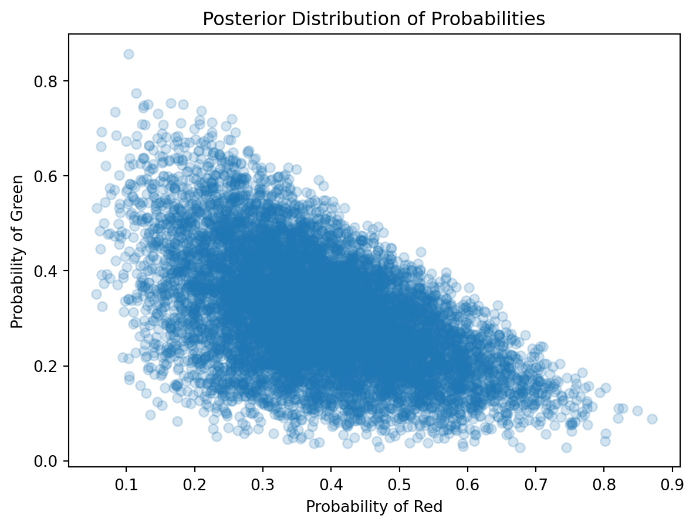
This posterior Dirichlet distribution represents our updated beliefs about the category probabilities after considering the observed data. We can draw samples from this posterior to estimate credible intervals for each category probability. More advanced visualization techniques would be needed to represent the full higher-dimensional posterior if there were more categories.
This section demonstrates how to apply Bayes’ Theorem to update our beliefs about the parameters of various discrete probability distributions after observing data. We’ll use Python to perform the calculations and visualize the results.
Let’s say we have a binomial distribution with parameters \(n\) (number of trials) and \(p\) (probability of success). We want to infer the value of \(p\) given some observed data. We’ll use a Beta distribution as the prior for \(p\) because it’s conjugate to the binomial likelihood, simplifying calculations.
Bayes’ Theorem states:
\(P(p|data) = \frac{P(data|p)P(p)}{P(data)}\)
import numpy as np
import matplotlib.pyplot as plt
from scipy.stats import beta, binom
# Prior parameters
alpha_prior = 2
beta_prior = 2
# Observed data
n = 10
k = 7
# Posterior parameters
alpha_posterior = alpha_prior + k
beta_posterior = beta_prior + n - k
# Plot prior and posterior
x = np.linspace(0, 1, 100)
prior = beta.pdf(x, alpha_prior, beta_prior)
posterior = beta.pdf(x, alpha_posterior, beta_posterior)
plt.plot(x, prior, label='Prior Distribution')
plt.plot(x, posterior, label='Posterior Distribution')
plt.xlabel('Probability of Success (p)')
plt.ylabel('Density')
plt.title('Prior and Posterior Distributions for p')
plt.legend()
plt.show()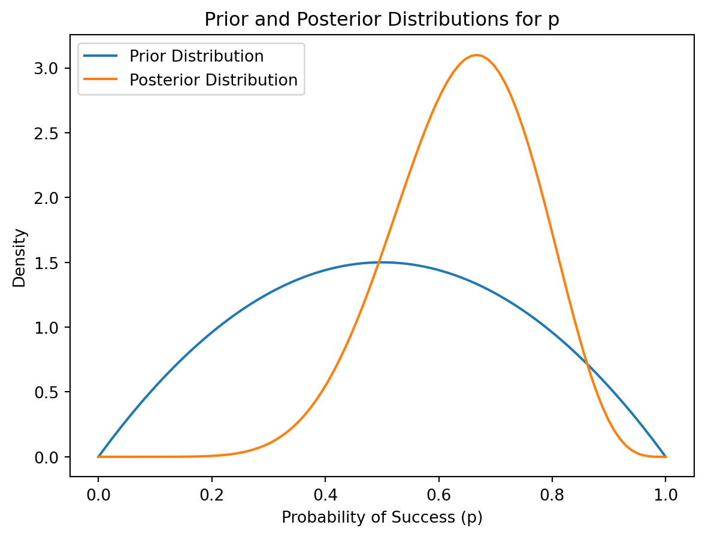
For a Poisson distribution with rate parameter λ, we can use a Gamma distribution as the conjugate prior.
from scipy.stats import gamma, poisson
# Prior parameters
alpha_prior = 2
beta_prior = 1
# Observed data (assuming we observed 8 events over 2 intervals)
k = 8
n = 2
# Posterior parameters
alpha_posterior = alpha_prior + k
beta_posterior = beta_prior + n
# Plot prior and posterior
x = np.linspace(0, 15, 100) # adjust the range as necessary
prior = gamma.pdf(x, alpha_prior, scale=1/beta_prior)
posterior = gamma.pdf(x, alpha_posterior, scale=1/beta_posterior)
plt.plot(x, prior, label='Prior Distribution')
plt.plot(x, posterior, label='Posterior Distribution')
plt.xlabel('Rate Parameter (λ)')
plt.ylabel('Density')
plt.title('Prior and Posterior Distributions for λ')
plt.legend()
plt.show()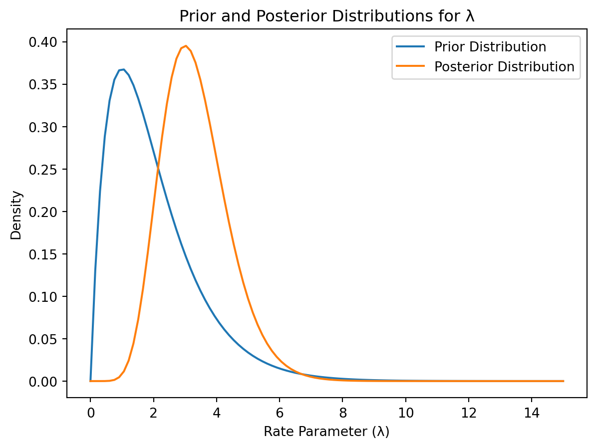
For categorical data, we use the multinomial distribution for the likelihood and the Dirichlet distribution for the prior on the category probabilities.
from scipy.stats import dirichlet
import matplotlib.pyplot as plt
import numpy as np
# Prior parameters (symmetric Dirichlet)
alpha_prior = np.array([1, 1, 1]) # For 3 categories
# Observed data
x = np.array([4, 3, 3])
# Posterior parameters
alpha_posterior = alpha_prior + x
#Plotting the posterior distribution (2D projection for visualization).
samples = dirichlet.rvs(alpha_posterior, size=10000)
plt.scatter(samples[:, 0], samples[:,1], alpha=0.2)
plt.xlabel('Probability of Category 1')
plt.ylabel('Probability of Category 2')
plt.title('Posterior Distribution of Probabilities')
plt.show()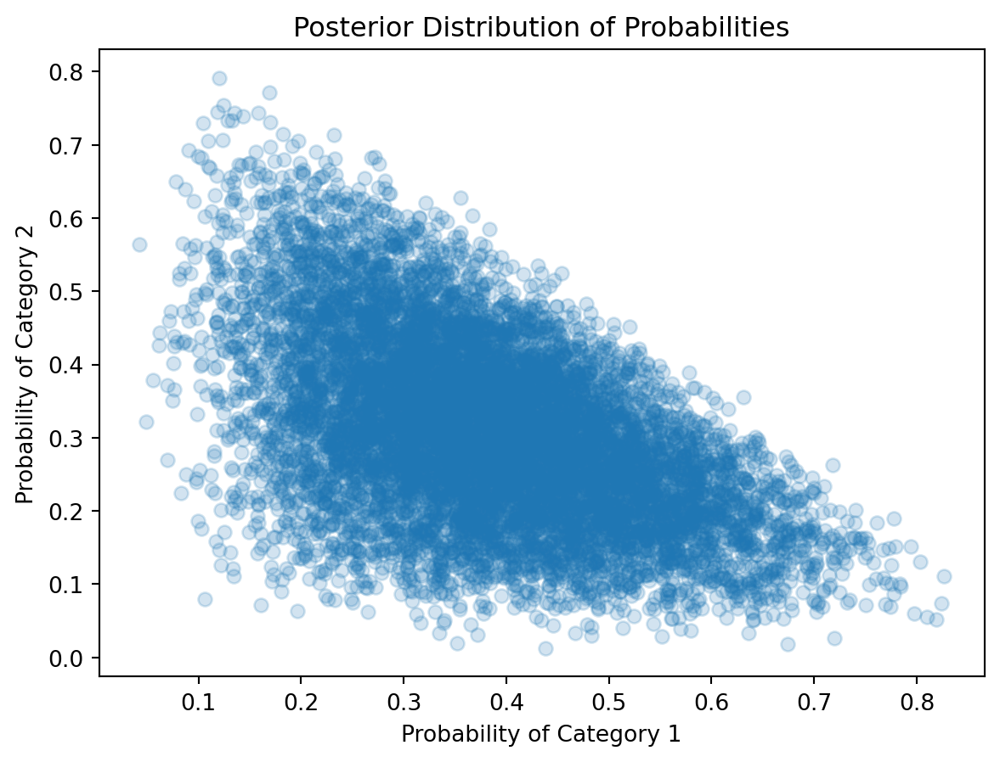
In all the above examples, the prior distribution reflects our initial beliefs about the parameter(s) before observing any data. The posterior distribution, calculated using Bayes’ theorem, represents our updated beliefs after incorporating the observed data. The shift from prior to posterior shows how the data has influenced our understanding of the parameter.
The code snippets above provide illustrative examples of applying Bayes’ theorem to update beliefs about parameters of binomial, Poisson, and multinomial distributions. They highlight the use of conjugate priors to simplify calculations and the power of Bayesian methods in updating our understanding of probability distributions in light of new evidence. Remember to adjust prior parameters to reflect your initial beliefs and data accordingly.